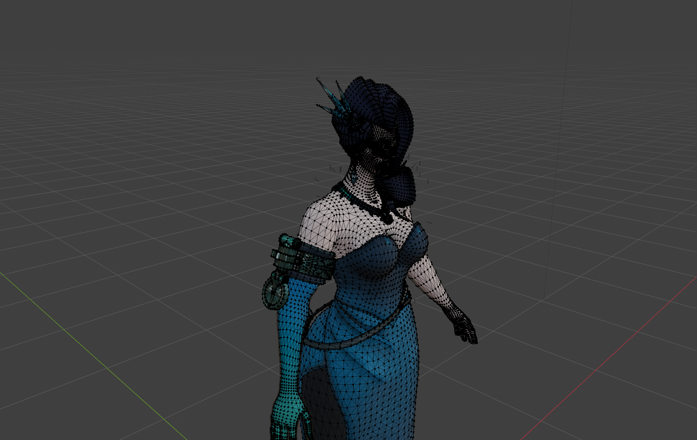

Overview & Challenge
The hardest part about modding a live service game is the constantly changing tools and workflow. Many of the best practices are outdated within the next month.
Throughout my modding projects, however, my approach to the 3D pipeline (from idea to in-game asset) has stayed the same. I've learned a lot about UVs, file systems, and professional models.
Details
Most of my early mods are simple texture replacements. However, with more complex models that don't have as easy texture maps, it's became difficult to achieve the visions I had in mind without changing the UVs (see above image).
